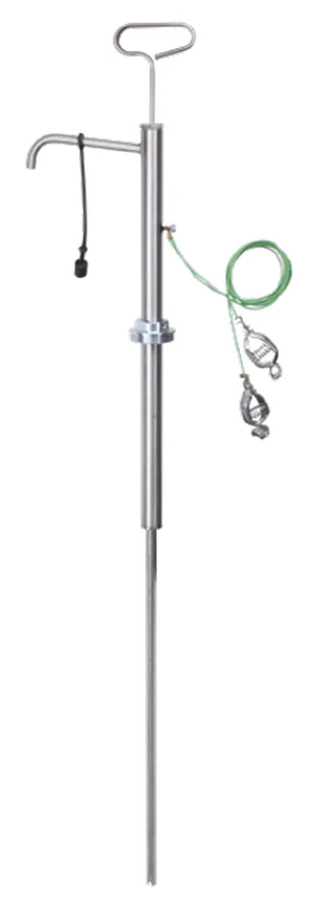

GROZ · Fuel & DEF Handling
Safety Pumps 316 Stainless Steel
CAT NR VLP/SS/5/F · ORD NR 44131
| CAT NR (catalogue number) | VLP/SS/5/F |
|---|---|
| ORD NR (order number) | 44131 |
| Box quantity | 10 |
| Suitable for | 20-30 litre (5 US gal.) pails |
Open in the catalogue The catalogue PDF, page 252
From the GROZ Fluid Handling CC-07 catalogue. Not yet verified: these details were read from the printed catalogue automatically; check the catalogue page before ordering.